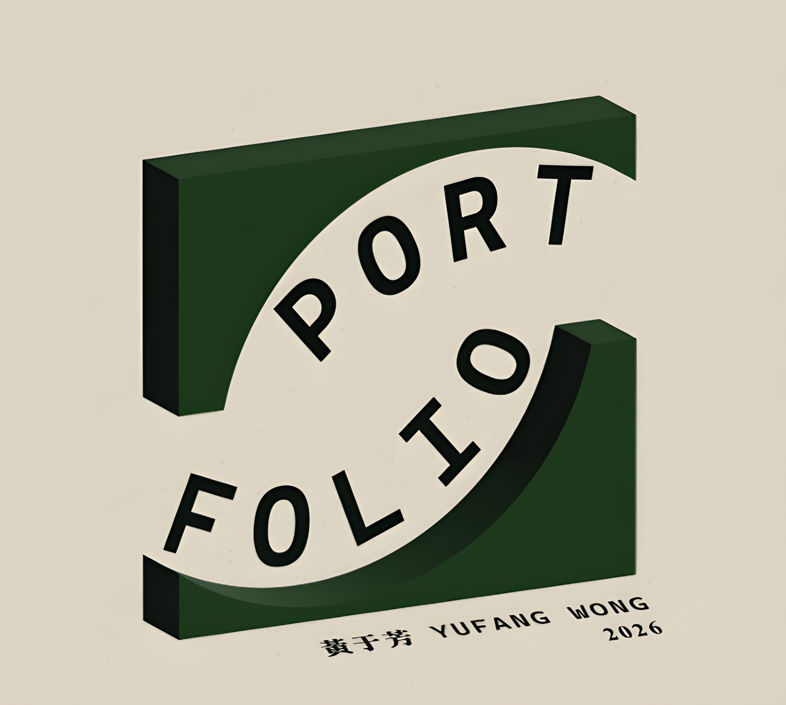
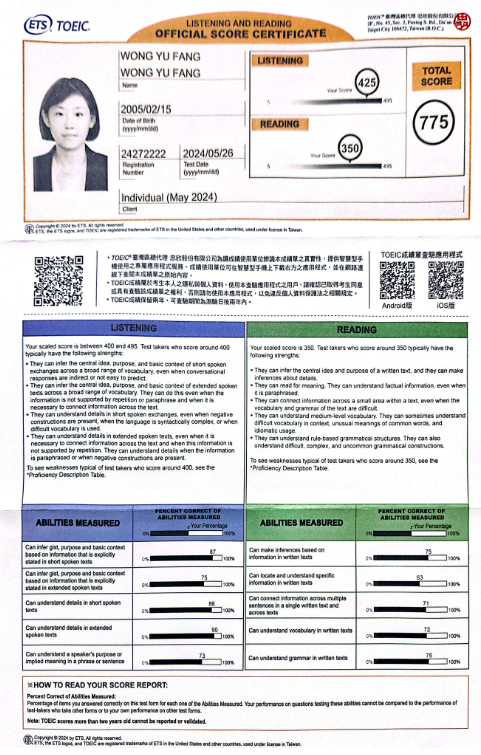
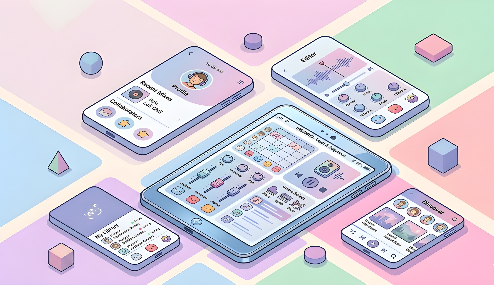
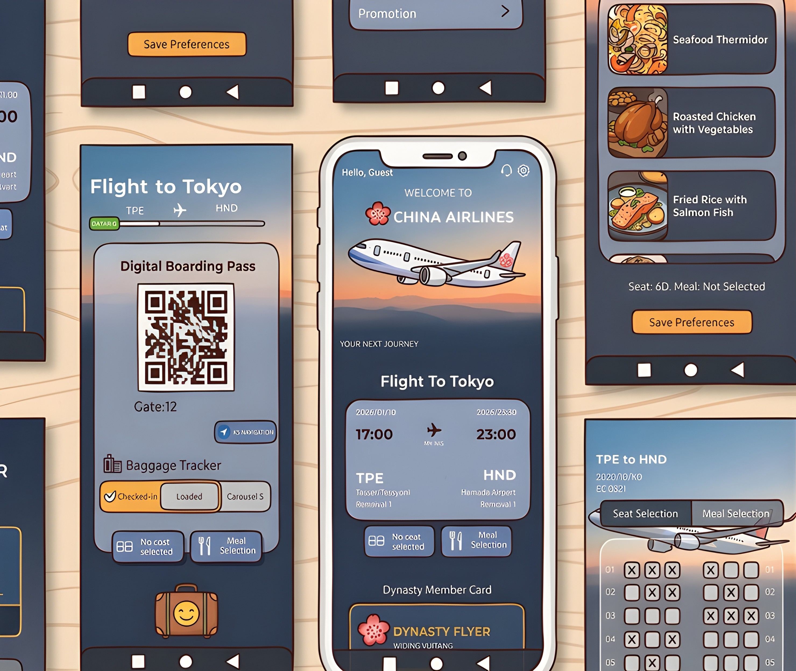

April 30, 2026
嗨，你好 我是黃于芳
歡迎來到我的小創意角落
嗨，你好 我是黃于芳
歡迎來到我的小創意角落

元智大學 (Yuan Ze University)
資訊傳播系 (Department of Information and Communication) | 2023 - 至今
檳城日新中學 (Jit Sin High School)
理科班 (Science Stream)
第 22 屆育秀盃 | 入圍
The 22nd Y.S. Award | Shortlisted
參與團隊 UI/UX 專案
第 33 屆時報金犢獎 | 參賽
Times Young Creative Awards
參與平面設計創業競賽
TOEIC 多益英語測驗 | 總分：775
TOEIC Listening & Reading Test | Score: 775
具備專業職場環境下有效溝通與獨立閱讀的良好基礎。
ILCC 英語競賽 | 優選
Honorable Mention
參與英語朗讀比賽，以發音與口說表現獲得佳作

TOEIC 多益英語檢定

ILCC 英語競賽

113年度傑出僑生獎學金獎狀

114年度傑出僑生獎學金獎狀
USER INTERFACE & EXPERIENCE DESIGN

一款轉譯夢境情緒的音樂生成 App，將睡眠數據轉化為直觀的聽覺體驗，建立數據與情感間的橋樑。

針對現有華航 App 進行介面重構與流程優化，旨在提升訂票與登機手續的使用體驗。